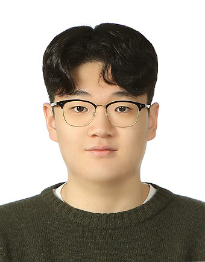

Physics · Quantum Information
Gwon Ryul Han
Undergraduate Student (Junior) & Researcher
UNIST — Ulsan National Institute of Science and Technology

About Me
I am an undergraduate physics researcher at UNIST focusing on theoretical quantum information science. My latest work explored quantum metrology with quantum states over spacetime formalisms. Currently exploring broader research directions, I am also investigating mixed-state topological order in condensed matter physics at KAIST.
Research Interests
01 · Core
Quantum Information Theory
Quantum MetrologyStates over Spacetime
02 · Current
Condensed Matter Physics
Anyon TheoryMixed-State Topological Order
03 · Further
Quantum Resource Theory
Quantum ThermodynamicsMagic Theory